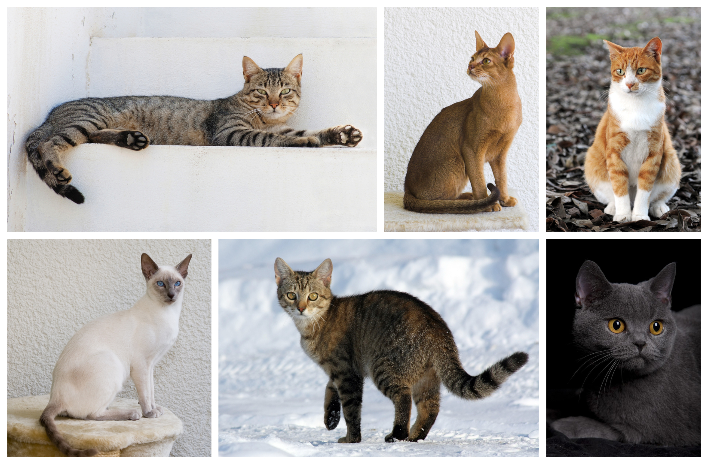
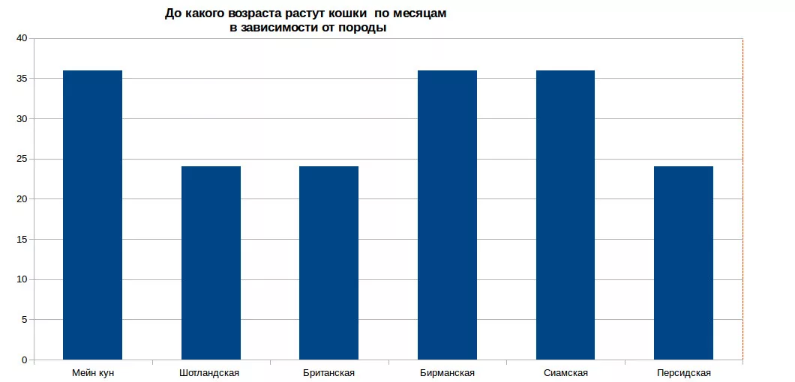

Кошка
Ко́шка (лат. Felis catus) — домашнее животное, одно из наиболее популярных (наряду с собакой) «животных-компаньонов».
С точки зрения научной систематики, домашняя кошка — млекопитающее семейства кошачьих отряда хищных. Одни исследователи рассматривают домашнюю кошку как подвид дикой кошки, другие — как отдельный биологический вид.
Являясь одиночным охотником на грызунов и других мелких животных, кошка — социальное животное, использующее для общения широкий диапазон звуковых сигналов, а также феромоны и движения тела.
В настоящее время в мире насчитывается около 600 млн домашних кошек, выведено около 200 пород, от длинношёрстных (персидская кошка) до лишённых шерсти (сфинксы), признанных и зарегистрированных различными фелинологическими организациями.
На протяжении десяти тысяч лет кошки ценятся человеком, в том числе за способность охотиться на грызунов и других домашних вредителей, а также за способность развлекать и снимать стресс.
Значение и этимология слова «кошка»
В русском языке слово «кошка» означает либо представителя биологического вида Felis catus вообще независимо от пола, либо самку этого вида. Самца называют «кот», а детёныша кошки — «котёнок» (мн. ч. котя́та).
Слово «кошка» в русском языке является диминутивом от др.-русск. слова котъка, которое, в свою очередь, происходит от существительного «кот» и является родственным лат. cattus «кошка» (так, в поздней латыни, начиная с V века, в отличие от классического латинского felis) и близким названиям во многих языках Европы и Ближнего Востока (англ. cat, арм. կատու, katu, галл. cath, ирл. catt, исп. gato, итал. gatto, рут. gyat, лезг. кац, лит. katė, нем. Katze, нуб. kadis, прусск. catto, фр. chad). Первоначальный источник неизвестен, но принято считать, что во многие языки слово попало из латинского.
Некоторые исследователи предполагают, что в основе слов различных индоевропейских языков, обозначающих кошку, лежит праиндоевропейский корень *kat-, от которого произошли глаголы индоевропейских языков, означающие «котиться», от которых позднее произошли названия детёнышей мелких животных на индоевропейских языках. Другие исследователи считают такую связь вторичным сближением.
Звукоподражательными, близкими русскому «мяу», являются названия кошки в древнеегипетском (mj.w) и китайском языках (māo).
Научная классификация
В 1758 году Карлом Линнеем в «Системе природы» домашней кошке было присвоено биномиальное название Felis catus. Иоганн Христиан фон Шребер в 1775 году дал дикой кошке название Felis silvestris.
В литературе встречаются и другие названия, используемые в качестве международного научного (латиноязычного) названия домашней кошки: Felis catus domesticus, Felis silvestris domesticus, а также предложенное в 1777 году Иоганном Христианом Поликарпом Эркслебеном в «Началах естествознания» название Felis domesticus (изначально — Felis domestica, поскольку слово Felis в те времена считалось женского рода).
В качестве русского названия данного таксона в научной (научно-популярной) литературе используется как выражение «домашняя кошка» (или «кошка домашняя»), так и просто слово «кошка».
В 2003 году Международной комиссией по зоологической номенклатуре было принято решение о закреплении за дикой кошкой названия Felis silvestris, а за её одомашненным подвидом — названия Felis silvestris catus, при этом было оговорено, что если в какой-либо классификации домашняя кошка будет описываться как отдельный вид, то в этом случае для названия соответствующего таксона следует использовать комбинацию, предложенную Линнеем, — Felis catus.
На основании данных, полученных современной филогенетикой, домашняя кошка является одним из пяти подвидов дикой кошки Felis silvestris, и её правильное международное научное название — Felis silvestris catus. В 2017 году вышла крупная статья, в которой домашняя кошка была выделена в отдельный вид.
Происхождение и история одомашнивания
Согласно генетическому исследованию аутосомных маркеров и митохондриальной ДНК 979 домашних, диких и одичавших кошек с трёх континентов, в том числе барханных кошек (Felis margarita), все домашние кошки по материнской линии происходят как минимум от пяти представительниц подвида степная кошка (Felis silvestris lybica), имеющих разные гаплотипы митохондриальной ДНК. В митохондриальной гаплогруппе IV, специфической для ближневосточных и домашних кошек, идентифицировали 6 субклад и рассчитали время жизни общего предка — ок. 13 тыс. лет назад, что значительно превышает время предполагаемого одомашнивания ближневосточных кошек. Генетический анализ митохондриальной ДНК 209 кошек из 30 захоронений на территории Европы, Ближнего Востока и Северной Африки показал, что домашние кошки распространялись по миру двумя большими волнами. Первая волна имела место на заре сельского хозяйства 12—9 тыс. лет назад — в Плодородном полумесяце и его окрестностях домашние кошки расселились вместе с земледельцами по всеему Ближнему Востоку. Несколько тысяч лет спустя вторая волна, вышедшая из Египта, охватила практически всю Европу и Северную Африку.
Обособление подвида Felis silvestris lybica произошло около 130 тысяч лет назад. Степная кошка до сих пор распространена по всей Северной Африке и в обширной зоне от Средиземноморья до Китая, где она обитает в зарослях саксаула в пустынях, в кустарниках возле водоёмов, в предгорьях и горах. Хотя мелкие дикие кошки разных подвидов могут скрещиваться между собой и давать потомство, результаты генетических исследований показали, что в филогенезе домашней кошки другие подвиды Felis silvestris, кроме степной кошки, участия не принимали.
Одомашнивание кошки произошло примерно 9500 лет назад на Ближнем Востоке в районе Плодородного полумесяца, где зародились и развивались древнейшие человеческие цивилизации. Одомашнивание кошки началось при переходе человека к оседлому образу жизни, с началом развития земледелия, когда появились излишки пищи и возникла необходимость их сохранения и защиты от грызунов.

Древнейшее археологическое свидетельство одомашнивания кошки было обнаружено на Кипре, где в ходе археологических раскопок было найдено совместное захоронение человека и кошки, которое датируется 7500 годом до н. э. Также было установлено, что остров Кипр был колонизирован выходцами из районов современных Анатолии (Турция) и Сирии.
Ранее учёные полагали, что первыми одомашнили кошек древние египтяне. Однако самые ранние свидетельства приручения кошек древними египтянами относились к 2000—1900 годам до нашей эры. А недавно было установлено, что в Древний Египет домашняя кошка попала, как и на Кипр, с территории Анатолии. В настоящее время кошка является одним из самых популярных домашних животных.

Несмотря на то, что кошки были одомашнены достаточно давно, большинство кошек способны выживать в условиях нахождения вне человеческого жилья, пополняя ряды вторично одичавших кошек, так как в условиях бродячей жизни кошки обычно быстро повторно дичают. Вторично одичавшие кошки часто живут уединённо и охотятся в одиночку, но иногда образуют небольшие колонии из нескольких самок с котятами.